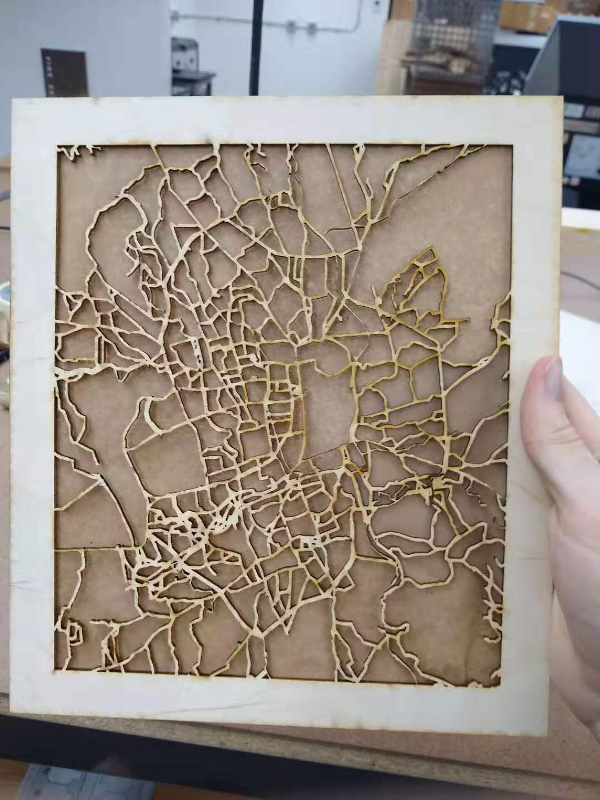

I actually knew exactly what I wanted to do for this project before it was even announced, since I happened to know that we were studying enclosures. My idea was to take the laser cut city map I made last week and build a box with LED lights inside, so I could light up the city from behind.
To start with, I took my city map and made a prototype box out of cardboard, to make sure the measurements were right. The vector-cut map was about 9 inches one side and about 11 the other. I had to decide how deep I wanted the box to be, and eventually settled on around two inches (since I thought that would be deep enough for a box but also shallow enough to keep the LEDs visible). When I prototyped with the cardboard, everything looked pretty nice.
Once the prototyping was done, I got to work cutting the foundations for my box. I used the miter saw to cut out the siding from some wood I had left over from my smiley face project. Each section was two inches wide.
After that, I had to drill in a hole in the bottom piece of wood so that the LED plug could go through it. I used a half inch drill bit to drill a circular hole.
After that it was time to put my frame together. I used Titebond multi-purpose glue for this, since it said it dried ultra quick and was useful for multiple applications. When I went to clamp the wood it turned out we didn't have any clamps big enough... so... I just let it sit. I figured if it all came to pieces later I could reglue and find another way to apply pressure.
While I waited for that, I taped a piece of brown paper to the back of my laser-cut city map. I'd experimented with both opaque acrylic and brown paper to diffuse light from LEDs, and user testing had shown people liked the brown paper better, so that's what I used.
By this time the wood glue had dried... and it seemed like nothing was about fall apart, so I felt emboldened and started taping the LEDs around the inside. The LED strip I used was a 24 inch strip of controllable LEDs I'd found on the clearance rack at Home Depot. It came with a little remote you could use to change the color, the intensity, and the pattern of the lights, which was pretty cool and was also a good way to add some buttons into the mix. Afterwards, I used the glue to glue the front of the box (the vector cut map) onto the frame. It was working pretty good, but needed a back.
For the back, I decided to use an engraved version of the city map, so that you can either have the light up vector cut side or the engraved side, depending on your mood. So, I used the laser cutter to engrave a version of the city map.
To attach the back I knew I needed something I could remove if necessary. I considered hinges, but I didn't have the time (or the hinges) to implement that, so I decided to just screw the back on with countersunk screws. I drilled a small pilot hole, then drilled each screw in with some of the screws in the try your luck screw drawer. The wood cracked a tiny bit, but overall I was satisfied with how it looked.
And then that was that! The box was relatively sturdy and lit up when plugged in, and you can use the remote as the interface to change the lights. It definitely looked pretty and I was glad to have something to put in my room.
Some key takeaways: One, measuring wood is MUCH HARDER THAN YOU THINK. Measure twice cut once is definitely good advice. Also err on the side of cutting too big, because then you can grind away material on the sander if you have a little too much, but you can't put material back.
Also, I would have liked to add a few more buttons or switches. One idea I have, which I might follow up on, is to incorporate the remote directly into the design. I could make a slot for it on the one side of the wood frame and maybe glue it in there, so that you could interact with it like a panel. That's definitely a note to take into the next project.
Comments? Questions? Concerns? Email me here!